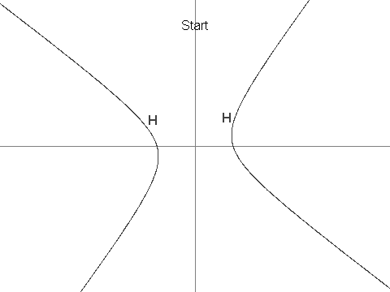

Let $H$ be the hyperbola defined by the equation $12x^2 + 7xy - 12y^2 = 625$.
Next, define $X$ as the point $(7, 1)$. It can be seen that $X$ is in $H$.
Now we define a sequence of points in $H$, $\{P_i: i \geq 1\}$, as:

You are given that $P_3 = (-19/2, -229/24)$, $P_4 = (1267/144, -37/12)$ and $P_7 = (17194218091/143327232, 274748766781/1719926784)$.
Find $P_n$ for $n = 11^{14}$ in the following format:
If $P_n = (a/b, c/d)$ where the fractions are in lowest terms and the denominators are positive, then the answer is $(a + b + c + d) \bmod 1\,000\,000\,007$.
For $n = 7$, the answer would have been: $806236837$.
solve(n=379749833583241) → ?